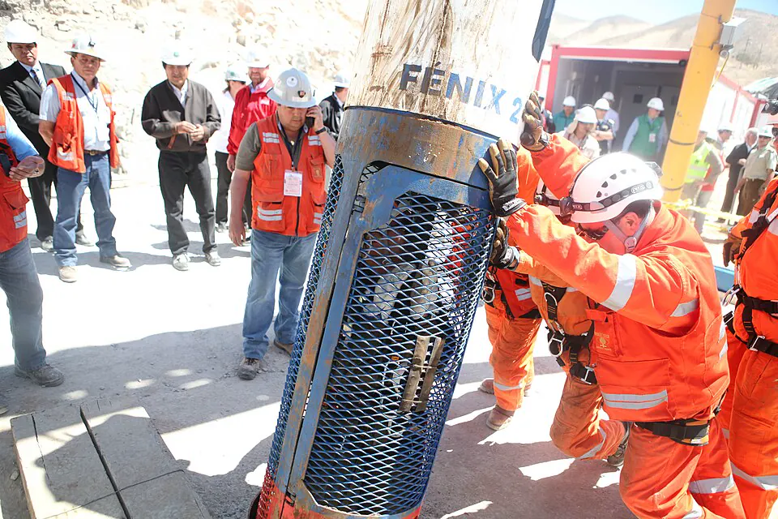

Rescate de los 33 mineros

El 5 de agosto de 2010, un derrumbe en la mina San José, un yacimiento de cobre y oro cercano a Copiapó, en el Desierto de Atacama, dejó atrapados a 33 mineros a unos 700 metros de profundidad. El gobierno de Sebastián Piñera asumió el rescate, coordinado por el ministro de Minería Laurence Golborne y con el apoyo de Codelco, empresas y expertos nacionales y extranjeros. El 22 de agosto, una sonda alcanzó el refugio y regresó con el mensaje "Estamos bien en el refugio los 33", que recorrió el mundo. Mientras sus familias acampaban junto a la mina, en el llamado Campamento Esperanza, se perforaron ductos para alcanzarlos. El 13 de octubre, tras 69 días bajo tierra, los 33 mineros fueron izados uno a uno en la cápsula Fénix 2, construida por la Armada de Chile. El rescate fue seguido en directo por millones de personas y se convirtió en un símbolo de esperanza y cooperación. A la vez, reabrió el debate sobre la seguridad laboral en la pequeña y mediana minería, pues la mina tenía antecedentes de accidentes, y motivó cambios en la fiscalización minera.
Versión para niños
El 5 de agosto de 2010, la mina San José, cerca de Copiapó, se derrumbó y 33 mineros quedaron atrapados a unos 700 metros bajo tierra. Durante 17 días nadie sabía si estaban vivos. Entonces, una sonda llegó hasta ellos y volvió a la superficie con un mensaje: estaban bien. El 13 de octubre de 2010, después de 69 días, todos fueron rescatados en una cápsula llamada Fénix. Millones de personas en el mundo vieron el rescate por televisión.
Para maestros
Nivel sugerido: 2° medio
Objetivo: Analizar el rescate de los 33 como un hito de cooperación y reflexionar sobre la seguridad laboral en la minería.
Preguntas para la clase:
- ¿Qué factores hicieron posible el rescate?
- ¿Por qué el accidente abrió un debate sobre las condiciones de trabajo en la minería?
- ¿Qué papel cumplieron los medios de comunicación en este hecho?
Actividad (20–30 min): Los estudiantes analizan noticias de distintos medios publicadas durante los 69 días y comparan cómo presentaron a los mineros, a sus familias y al gobierno. Concluyen qué aprendizajes dejó el caso para la seguridad laboral.
Fuentes sugeridas: Biblioteca del Congreso Nacional (BCN); Biblioteca Nacional Digital; Servicio Nacional de Geología y Minería (Sernageomin).
Objetivos de Aprendizaje (Currículum Nacional)
- 5° básico · HI05 OA 10 Reconocer y ubicar en mapas recursos naturales significativos de Chile, como cobre, hierro, recursos marítimos y forestales
- 4° medio (Educación Ciudadana) · FG-ECIU-4M-OAC-04 Comprender la importancia de los derechos laborales en Chile … la evolución de los mecanismos institucionales que buscan resguardarlos
Revisión humana pendiente. Cómo se revisa · Reportar un error
Cómo citar: Historia de Chile. (2026). Rescate de los 33 mineros. En Historia de Chile: atlas y línea de tiempo. https://moises-salgado.github.io/historia-de-chile/momento/rescate-de-los-33-mineros.html